To enlarge, click some photos which have titles in light blue color background.
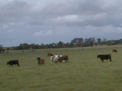 | 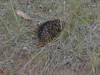 | 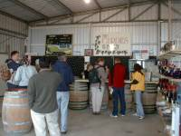 | 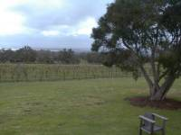 |
| a farm | a wild hedgehog | Winery 01 | Winery 02 |
On the way to watch Penguin Parade our group call in a winery, a souvenir store which had the small zoo and Koala Conservation Centre. Although here was a small island, we saw a range of farms and a lot of cow there. What creature that was, someone said and our bus was stopped by the guide and at side of the creature, he explained that was a wild hedgehog. At the winery we tasted some kinds of local wine. The guide recommended a cup of wine to taste, saying most Japanese like this. However it was not wine but sweet one.
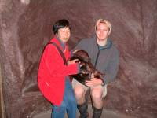 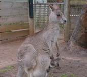 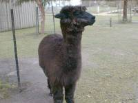 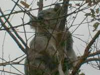 At the garden in the restaurant we saw such novelty animals as Wombat, Kangaroo, Alpaca, Koala and so on. It was first time I saw them. Specially, Koala is such very lovely creature like a stuffed toy. Koala don't move most time in a day and cling to the branch of trees. It really looks a stuffed toy on the tree.
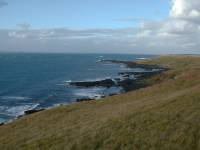 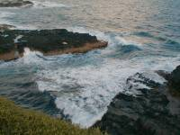 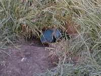 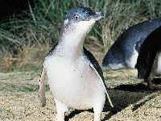
On the lofty place beside this shore I felt very cold and saw swell was rough in spite of Spring, so we could image how Winter was. Around here these were some penguins in small hall which might took a break to get fish. At first I wondered where Penguin Parade and what was Penguin Parade. Our tour got twilight and we followed the tour guide. He brought us other side of shore which had wooden sidewalk and offered hot tea and biscuits at the end of sidewalk close the sea. I didn't understand what would happen. I couldn't see anything without lighting up when a small creature moved in light.
A couple of Penguin came up to us which were so very small like a dovish, stumbling but eagerly walking to their nest. And then a lot of Penguin passed us by grade as couples or groups. I was surprised how many Penguin lived here. Finally I got why that was called Penguin Parade. Additionally, I heard that Penguin of Phillip Island is the smallest Penguin in the world.
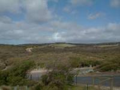 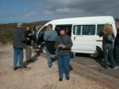 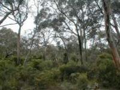 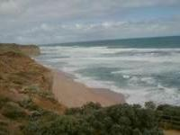
On the way we passed through the scenic road, had, here and there, modern cottages on hills and beaches on the other side. In forest we could see wild koalas which were on eucalyptuses, but couldn't take their picture due to having distance.
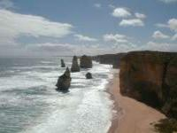 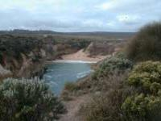 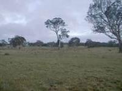 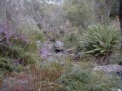
"What a beautiful view this is!" I took a picture without any idea. After that I understood that was Twelve Apostles which was used a lot of Ad. of Australia as a famous place and a view highlight.
However we would be able to see like cliffs, rocks and shores in Japan as a Island. But here everything was mammoth and massive in scale. I yearned a farm stay and I did. Early in the morning I went for a walk and could watch wild kangaroos , five meter close, in the field. It was so very lovely that I got close a little bit at the moment they run away, hopping.
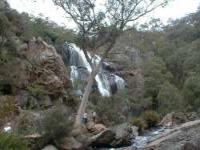 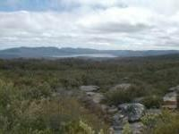 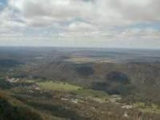 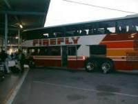
Anyway that day we walked and walked, two hour walk in the forest and one hour and half climb up the mountain in the natural park. We felt natural in Australia, but we were exhausted so much. I took a double-decker bus from Ballarat to Adelaide through a night.
animals
Wombat a parent-child kangaroo Alpaca Koala Conservation Centre
Penguin
Shore 01 Shore 02 Penguin Penguin Parade
The Great Ocean Road
We also jointed a pack tour of Great Ocean Road and Grampians which was named Eco-tour. That tour sales point was touching Australia natural. We spent two days in that tour and went to Adelaide continuously.
on the way
Road 01 Road 02 Forest Ocean Road 01
The Great Ocean Road
Twelve Apostles Ocean Road 03 farm stay natural park B
Natural Park
Mckenzie Falls natural park C 02 natural park C 03 express bus
{kind=link}
{kind=link}
{kind=link}
{kind=link}
{kind=link}
{kind=link}
{kind=link}